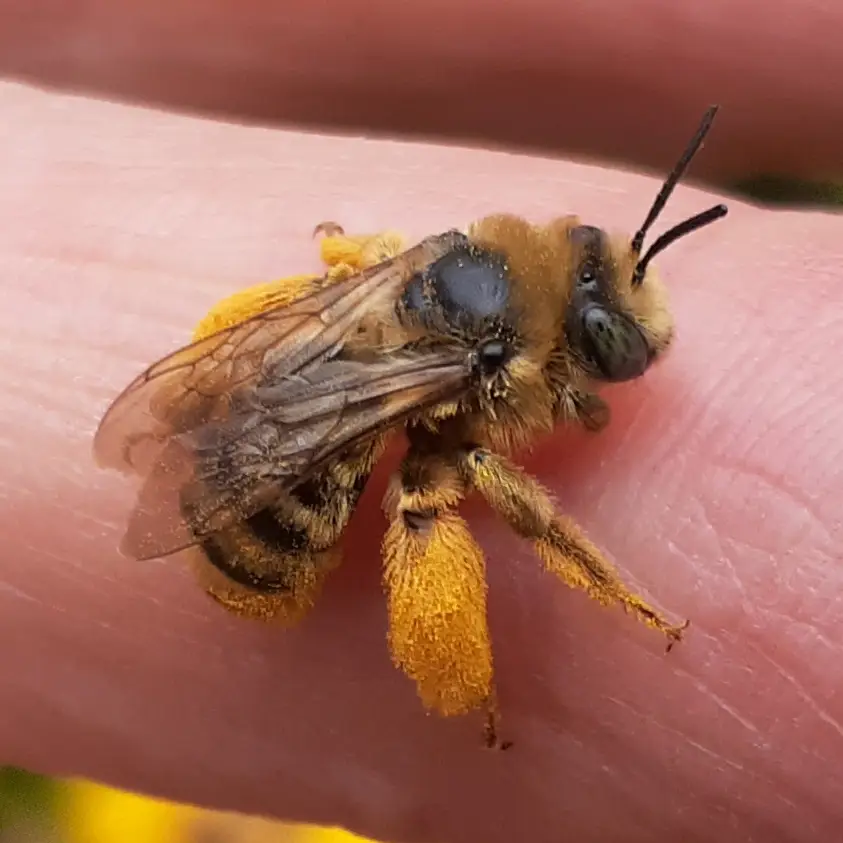
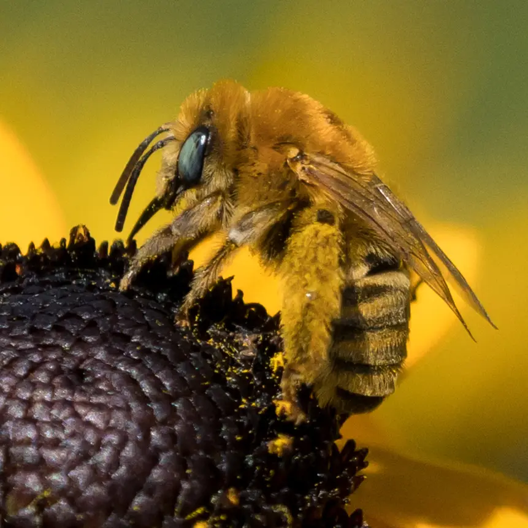
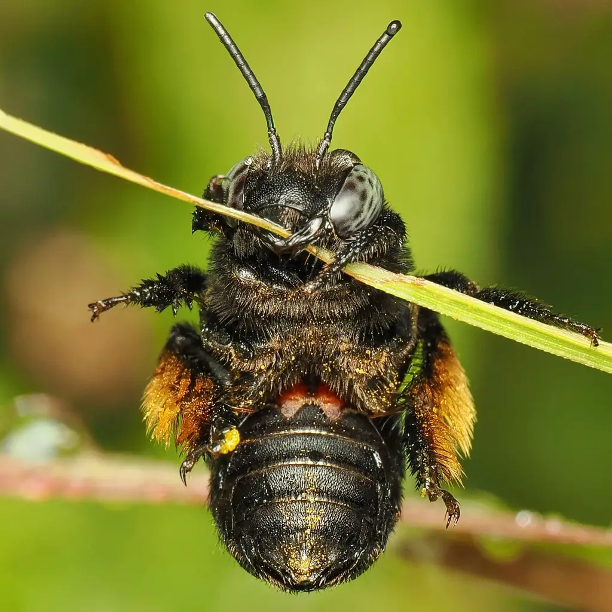

Melissodes agilis F

Melissodes scotti
Melissodes dagosus M - dorsal view

Melissodes dagosus M - face

Melissodes dagosus M - lateral veiw

Melissodes ablusus M
Melissodes ablusus F

Melissodes apicatus F
© 2025 Paula Sharp
© 2025 Paula Sharp
Melissodes apicatus M
© 2025 Paula Sharp
© 2025 Paula Sharp

Melissodes appressus M

Melissodes appressus F

Melissodes bicoloratus F

Melissodes bidentis F - face

Melissodes bidentis F - lateral veiw

Melissodes bidentis F - dorsal veiw

Melissodes floris M - face

Melissodes floris M - lateral veiw

Melissodes floris M - dorsal veiw
Melissodes agilis F - face

Melissodes agilis F - lateral veiw

Melissodes agilis F - dorsal veiw
Melissodes agilis M - face

Melissodes agilis M - dorsal veiw
Melissodes agilis M - lateral veiw
Melissodes agilis M - face
Melissodes agilis F&M
Melissodes agilis mating

Melissodes bimaculatus M - dorsal veiw
Melissodes bimaculatus M - dorsal veiw

Melissodes bimaculatus F - lateral veiw
Melissodes bimaculatus F - lateral veiw
Melissodes bimaculatus F - face
Melissodes bimaculatus F

Melissodes bimaculatus F - sternal view
Melissodes boltoniae M - dorsal veiw
Melissodes boltoniae M - face
Melissodes boltoniae M - lateral veiw
Melissodes boltoniae M - metasomal veiw
Melissodes boltoniae F - metasomal veiw
Melissodes boltoniae F - lateral veiw
Melissodes boltoniae F - metasomal veiw
Melissodes boltoniae F - face

Melissodes bruneri F - dorsal veiw
Melissodes bruneri F - lateral veiw
Melissodes bruneri F - face

Melissodes bimatris F - face

Melissodes bimatris F - face

Melissodes bimatris F - dorsal veiw

Melissodes bimatris F - metasomal veiw

Melissodes bimatris F - lateral veiw
Melissodes bimatris M - face
Melissodes cestus M
Melissodes cestus M - dorsal veiw

Melissodes cestus M - face
Melissodes cestus M - lateral veiw
Melissodes colliciatus M - dorsal veiw
Melissodes compositus M - face
Melissodes compositus M - lateral veiw
Melissodes compositus M - dorsal veiw
Melissodes denticulatus F
Melissodes denticulatus F
Melissodes denticulatus F - dorsal view
Melissodes denticulatus F - dorsal view
Melissodes denticulatus F - lateral view
Melissodes denticulatus M - lateral view
Melissodes denticulatus M - face

Melissodes desponsus F - lateral view

Melissodes desponsus F

Melissodes desponsus F - scopal view

Melissodes desponsus F - lateral view 2

Melissodes desponsus M

Melissodes desponsus M - face

Melissodes desponsus M - standing

Melissodes desponsus - mating

Melissodes rivalis M

Melissodes rivalis M - face

Melissodes rivalis M - dorsal view

Melissodes rivalis M - face

Melissodes rivalis M - lateral view

Melissodes rivalis F - dorsal view

Melissodes rivalis F - face

Melissodes rivalis F - lateral view

Melissodes rivalis F - galea

Melissodes rivalis F - pygidial plate

Melissodes rivalis F - terga